СП 285.1325800.2016 «Стадионы футбольные. Правила проектирования»
О документе: разработчики, утверждение, регистрация, ключевые слова
- 1 ИСПОЛНИТЕЛЬ -Акционерное общество «Центральный научноисследовательский и проектно-экспериментальный институт промышленных зданий и сооружений»
- 2 ВНЕСЕН Техническим комитетом по стандартизации ТК 465 «Строительство»
- 3 ПОДГОТОВЛЕН К УТВЕРЖДЕНИЮ Департаментом градостроительной деятельности и архитектуры Министерства строительства и жилищно-коммунального хозяйства Российской Федерации (Минстрой России)
- 4 УТВЕРЖДЕН приказом Министерства строительства и жилищнокоммунального хозяйства Российской Федерации (Минстрой России) от 16 декабря 2016 г. № 984/пр и введен в действие с 17 июня 2017 г.
- 5 ЗАРЕГИСТРИРОВАН Федеральным агентством по техническому регулированию и метрологии (Росстандарт)
- 6 ВВЕДЕН ВПЕРВЫЕ
В случае пересмотра (замены) или отмены настоящего свода правил соответствующее уведомление будет опубликовано в установленном порядке. Соответствующая информация, уведомление и тексты размещаются также в информационной системе общего пользования - на официальном сайте разработчика (Минстрой России) в сети Интернет
© Минстрой России, 2016
Настоящий нормативный документ не может быть полностью или частично воспроизведен, тиражирован и распространен в качестве официального издания на территории Российской Федерации без разрешения Минстроя России
Дата введения - 2017-06-17
УДК [
]
ОКС 91.040.10
Ключевые слова: футбольный стадион, спортивная арена, игровая зона, зона спортсменов, трибуны, зрители, VIP, VVIP
ИСПОЛНИТЕЛЬ
АО «ЦНИИПромзданий»
Наименование организации
Руководитель разработки Генеральный директор В.В.Гранев
Руководитель разработки Зам.генерального директора Д.К.Лейкина
Ответственный Исполнитель Рук. АСМ 4 В.В.Моторин
Введение
Настоящий свод правил разработан в развитие СП 118.13330 с учетом обеспечения требований СП 59.13330, а также документов РФС, УЕФА и ФИФА
Настоящий свода правил направлен на обеспечение требований [1], [2], [3] и повышение уровня безопасности, функциональности и комфортности нахождения различных групп посетителей футбольных стадионов, обеспечение снижения энергозатрат, применение единых методов определения эксплуатационных характеристик, а также на сокращение числа регулирующих область деятельности нормативных документов и концентрации требований в одном нормативном документе для облегчения труда проектировщиков.
Настоящий свод правил разработан авторским коллективом АО «ЦНИИпромзданий» (руководитель темы - д-р техн. наук В.В. Гранев , канд. архит. Д.К. Лейкина , ответственные исполнители - архитекторы - канд. архит. А.М. Гарнец , В.В. Моторин , М.В. Павловская ; исполнитель - архитектор С.Р. Мамедова , инженеры канд. техн. наук Т.Е. Стороженко , канд. техн. наук Л.И. Иванихина , Е.В. Моторина , А.Я.Розенблюм , Е.С.Суханова , канд. техн. наук А.М. Шахраманьян , канд. техн. наук В.И. Хицков ).
1Область применения
2Нормативные ссылки
В настоящем своде правил использованы нормативные ссылки на следующие документы:
ГОСТ 27751-2014 Надежность строительных конструкций и оснований. Основные положения
ГОСТ 27900-88 (МЭК 598-2-22-90) Светильники для аварийного освещения. Технические требования
ГОСТ 30494-2011 Здания жилые и общественные. Параметры микроклимата в помещениях
ГОСТ 31817.1.1-2012 Системы тревожной сигнализации. Часть 1. Общие требования. Раздел 1. Общие положения
ГОСТ 31937-2011 Здания и сооружения. Правила обследования и мониторинга технического состояния
ГОСТ IEC 60598-2-4-2012 Светильники. Часть 2. Частные требюования. Раздел 4. Светильники переносные общего назначения
ГОСТ IEC 60598-2-22-2012 Светильники. Часть 2-22. Частные требования. Светильники для аварийного освещения
ГОСТ Р 12.4.026-2001 Система стандартов безопасности труда. Цвета сигнальные, знаки безопасности и разметка сигнальная. Назначение и правила применения. Общие технические требования и характеристики. Методы испытаний
СТАДИОНЫ ФУТБОЛЬНЫЕ. Правила проектирования Football stadiums. Desing rules
ГОСТ Р 21.1703-2000 Система проектной документации для строительства.
Правила выполнения рабочей документации проводных средств связи ГОСТ Р 50571.5.52-2011/МЭК 60364-5-52:2009 Электроустановки низковольтные. Часть 5-52. Выбор и монтаж электрооборудования. Электропроводки ГОСТ Р 50571.28-2006 (МЭК 60364-7-710:2002) Электроустановки зданий. Часть7710. Требования к специальным электроустановкам. Электроустановки медицинских помещений ГОСТ Р 50776-95 (МЭК 839-1-4-89 Системы тревожной сигнализации. Часть 1. Общие требования. Раздел 4. Руководство по проектированию, монтажу и техническому обслуживанию ГОСТ Р 51241-2008 Средства и системы контроля и управления доступом. Классификация. Общие технические требования. Методы испытаний ГОСТ Р 51558-2014 Средства и систем охранные телевизионные. Классификация. Общие технические требования. Методы испытаний ГОСТ Р 52435-2015 Технические средства охранной сигнализации. Классификация. Общие технические требования и методы испытаний ГОСТ Р 52539-2006 Чистота воздуха в лечебных учреждениях. Общие требования ГОСТ Р 52551-2006 Системы охраны и безопасности. Термины и определения ГОСТ Р 53245-2008 Информационные технологии. Кабельные системы структуированные. Монтаж основных узлов системы. Методы испытания ГОСТ Р 53246-2008 Информационные технологии. Кабельные системы структуированные. Проектирование основных узлов системы. Общие требования ГОСТ Р 53295-2009 Средства огнезащиты для стальных конструкций. Общие требования. Метод определения огнезащитной эффективности ГОСТ Р 53296-2009 Установка лифтов для пожарных в зданиях и сооружениях. Требования пожарной безопасности ГОСТ Р 53704-2009 Системы безопасности комплексные и интегрированные. Общие технические требования СП 1.13130.2009 Системы противопожарной защиты. Эвакуационные пути и выходы (с изменением № 1) СП 2.13130.2012 Системы противопожарной защиты. Обеспечение огнестойкости объектов защиты (c изменением № 1) СП 3.13130.2009 Системы противопожарной защиты. Система оповещения и управления эвакуацией людей при пожаре. Требования пожарной безопасности СП 4.13130.2013 Системы противопожарной защиты. Ограничение распространения пожара на объекты защиты. Требования к объемно-планировочным решениям СП 5.13130.2009 Системы противопожарной защиты. Установки пожарной сигнализации и пожаротушения автоматические. Нормы и правила проектирования СП 7.13130.2013 Отопление, вентиляция и кондиционирование. Требования пожарной безопасности СП 8.13130.2009 Системы противопожарной защиты. Источники наружного противопожарного водоснабжения. Требования пожарной безопасности (с изменением № 1) СП 10.13130.2009 Системы противопожарной защиты.
- Внутренний противопожарный водопровод. Требования пожарной безопасности (с изменением № 1)
- СП 14.13330.2014 «СНиП II-7-81* Строительство в сейсмических районах» (с изменением № 1)
- СП 16.13330.2011 «СНиП II-23-81* Стальные конструкции» (с изменением № 1)
- СП 20.13330.2011 «СНиП 2.01.07-85* Нагрузки и воздействия»
- СП 22.13330.2011 « СНиП 2.02.01-83* Основания зданий и сооружений»
- СП 24.13330.2011 « СНиП 2.02.03-85 Свайные фундаменты»
- СП 30.13330.2012 «СНиП 2.04.01-85* Внутренний водопровод и канализация зданий»
- СП 31.13330.2012 «СНиП 2.04.02-84* Водоснабжение. Наружные сети и сооружения» (с изменениями № 1, № 2)
- СП 32.13330.2012 «СНиП 2.04.03-85 Канализация. Наружные сети и сооружения» (с изменением № 1)
- СП 34.13330.2012 «СНиП 2.05.02-85 Автомобильные дороги»
- СП 35.13330.2011 «СНиП 2.05.03-84* Мосты и трубы»
- СП 42.13330.2011 «СНиП 2.07.01-89* Градостроительство. Планировка и застройка городских и сельских поселений»
- СП 44.13330.2011 «СНиП 2.09.04-87* Административные и бытовые здания»
- СП 50.13330.2012 «СНиП 22-02-2003 Тепловая защита зданий»
- СП 51.13330.2011 «СНиП 23-03-2003 Защита от шума»
- СП 52.13330.2011 «СНиП 23-05-95* Естественное и искусственное освещение»
- СП 59.13330.2012 «СНиП 35-01-2001 Доступность зданий и сооружений для маломобильных групп населения» (с изменением № 1)
- СП 60.13330.2012 «СНиП 41-01-2003. Отопление, вентиляция и кондиционирование воздуха»
- СП 62.13330.2011 «СНиПа 42-01-2002 Газораспределительные системы »
- СП 63.13330.2012 «СНиП 52-01-2003 Бетонные и железобетонные конструкции. Основные положения» (с изменением № 1)
- СП 89.13330.2012 «СНиП II-35-76 Котельные установки»
- СП 112.13330.2012 «СНиП 21-01-97* Пожарная безопасность зданий и сооружений»
- СП 113.13330.2012 «СНиП 21-02-99* Стоянки автомобилей» (с изменением № 1)
- СП 118.13330.2012 «СНиП 31-06-2009 Общественные здания и сооружения» (с изменением № 1)
- СП 124.13330.2012 «СНиП 41-02-2003 Тепловые сети»
- СП 129.13330.2011 «СНиП 3.05.04-85* Наружные сети и сооружения водоснабжения и канализации»
- СП 132.13330.2011 Обеспечение антитеррористической защищенности зданий и сооружений. Общие требования проектирования
- СП 255.1325800.2016 Здания и сооружения. Правила эксплуатации. Основные положения
- СанПиН 2.1.2.2631-10 Санитарно-эпидемиологические требования к размещению, устройству, оборудованию, содержанию и режиму работы организаций коммунальнобытового назначения, оказывающих парикмахерские и косметические услуги
- СанПиН 2.1.3.2630-10 Санитарно-эпидемиологические требования к организациям, осуществляющим медицинскую деятельность
СанПиН 2.1.4.1074-01 Питьевая вода. Гигиенические требования к качеству воды централизованных систем питьевого водоснабжения. Контроль качества. Гигиенические требования к обеспечению безопасности систем горячего водоснабжения
СанПиН 2.2.1/2.1.1.1076-01 Гигиенические требования к инсоляции и солнцезащите помещений жилых и общественных зданий и территорий
СанПиН 2.2.1/2.1.1.1200-03 Санитарно-защитные зоны и санитарная классификация предприятий, сооружений и иных объектов
СанПиН 2.2.1/2.1.1.1278-03 Гигиенические требования к естественному, искусственному и совмещенному освещению жилых и общественных зданий
СанПиН 2.2.2/2.4.1340-03 Гигиенические требования к персональным электронновычислительным машинам и организации работы
СаНПиН 2.3.6.1079-01 Санитарно-эпидемиологические требования к организациям общественного питания, изготовлению и оборотоспособности в них пищевых продуктов и продовольственного сырья
Примечание - При пользовании настоящим сводом правил целесообразно проверить действие ссылочных документов в информационной системе общего пользования - на официальном сайте федерального органа исполнительной власти в сфере стандартизации в сети Интернет или по ежегодному информационному указателю «Национальные стандарты», который опубликован по состоянию на 1 января текущего года, и по выпускам ежемесячного информационного указателя «Национальные стандарты» за текущий год. Если заменен ссылочный документ, на который дана недатированная ссылка, то рекомендуется использовать действующую версию этого документа с учетом всех внесенных в данную версию изменений. Если заменен ссылочный документ, на который дана датированная ссылка, то рекомендуется использовать версию этого документа с указанным выше годом утверждения (принятия). Если после утверждения настоящего свода правил в ссылочный документ, на который дана датированная ссылка, внесено изменение, затрагивающее положение, на которое дана ссылка, то это положение рекомендуется применять без учета данного изменения. Если ссылочный документ отменен без замены, то положение, в котором дана ссылка на него, рекомендуется применять в части, не затрагивающей эту ссылку. Сведения о действии сводов правил целесообразно проверить в Федеральном информационном фонде стандартов.
3Термины и определения
В настоящем своде правил использованы термины по [4], [5], СП 118.13330, СП 59.13330, а также следующие термины с соответствующими определениями:
- 3.1аэрация корневой системы натурального газона
- Естественное проветривание натурального газона с помощью механических средств для улучшения роста корневой системы.
- 3.2блок зрительских мест (сектор)
- Участок (фрагмент) зрительской трибуны с группой мест, на который зрители загружаются и с которого зрители эвакуируются по общему проходу (лестнице) блока непосредственно или через люк.
- 3.3внешний периметр безопасности
- Ограждение территории вокруг стадиона, для входа или въезда на которую необходимо предъявить соответствующие билеты или аккредитацию и пройти процедуру досмотра.
- 3.4временный тип объектов питания
- Тип объекта питания временного функционирования, предназначенный для быстрого обслуживания зрителей во время футбольных матчей с ограниченным ассортиментом кулинарной продукции или спортивной атрибутики.
- 3.5вспомогательная зона
- Специально отведенное место на стадионе вокруг игрового поля для нахождения во время проведения матча участников матча, в т. ч. запасных игроков, стюардов, резервных арбитров, позиций фотографов, рекламных щитов, для размещения площадок для разминки команд перед матчем и др.
- 3.6входные группы стадиона
- Здания и сооружения контрольно-пропускных пунктов для людей и транспорта, касс, санитарных узлов, зон хранения багажа, расположенные на внешнем периметре безопасности стадиона.
- 3.7гостевой городок
- Территория, отведенная на время проведения футбольных матчей высшей категории, оборудованная временными зданиями и сооружениями с подключением инженерного обеспечения.
- 3.8гостевые места (для зрителей категории «Гостеприимство»)
- Места в виде трибун, обеспечивающие беспрепятственную видимость игры в футбол, расположенные за пределами игровой зоны, с повышенными качествами сидений.
- 3.9дренажная система игрового поля
- Комплекс конструктивных, технологических и строительных мероприятий, направленных на решение задачи сбора и отведения дождевых вод, попадающих на натуральный газон игровой зоны.
- 3.10зона гостевого обслуживания
- Выделенная зона эксклюзивного обслуживания высокого качества определенной категории зрителей на трибунах и ложах (скайбоксах), как правило, от 2 до 4 рядов с местами повышенной комфортности, вместимостью от 10 до 40 человек, с видом на поле и достаточными площадями для возможности организации обслуживания напитками, закусками. Во время проведения матчей высшей категории включает в себя гостевой городок.
- 3.11зона команд
- Не менее двух зон в западном секторе, включающие помещения раздевалок команд и тренеров, санитарные узлы, душевые, массажные помещения, помещения технических работников, внутренние зоны разминки.
- 3.12зрительские места
- Места, на трибунах, обеспечивающие беспрепятственную видимость игры в футбол, расположенные за пределами игровой зоны.
- 3.13игровая зона
- Игровое поле и вспомогательная зона вокруг игрового поля вплоть до границы трибун для размещения в ней скамеек команд, помощников судьи, работников, подающих мячи, представителей СМИ, медицинского персонала, запасных игроков, стюардов (охраны) и др.
- 3.14игровое поле
- Площадка для проведения футбольных матчей, габаритами, как правило, 68 × 105 м с натуральным травяным или искусственным покрытием
- 3.15искусственный газон
- Искусственное покрытие, соответствующее стандартам качества международных футбольных организаций, использование которого должно быть одобрено Союзом европейских футбольных ассоциаций - УЕФА (для клубных соревнований УЕФА) или Российским футбольным союзом (для российских соревнований).
- 3.16контрольно-пропускной пункт; КПП
- Здание или сооружение на внешнем периметре стадиона, предназначенное для контроля прохода людей и/или проезда транспорта на территорию стадиона.
- 3.17крытая спортивная арена
- Крытое здание, входящее в состав футбольного стадиона, центральным ядром которого является игровое поле, закрытое конструкцией кровли, с трибунами для зрителей, удовлетворяющее по функциональному насыщению требованиям проведения соревнований по футболу и учебно-тренировочному процессу.
- 3.18люк
- Проем (с проходом горизонтальным или по пандусу) в трибуне, предназначенный для входа зрителей на трибуну и выхода с нее, а также для связи вспомогательных помещений, размещаемых в подтрибунном пространстве, с трибуной и игровым полем.
- 3.19Международная федерация футбола; ФИФА ( FIFA)
- Федерация организатор международных футбольных турниров и чемпионатов мира.
- 3.20места со свободным доступом
- Места на трибунах для зрителей, в ложах (в отдельных случаях в игровой зоне) для трех категорий МГН: места рядом с проходом, имеющие доступ без ступенек; места повышенной комфортности имеющие дополнительное пространство для ног или место для собаки-поводыря; особо широкие сидения для людей с повышенной массой тела.
- 3.21мобильный тип объектов питания
- Мобильные (передвижные) торговые объекты: тележки, передвижные холодильники для прохладительных напитков, морозильники для мороженного и пр.
- 3.22натуральный газон
- Естественное травяное покрытие игрового поля, специального для футбольных полей состава и качества, требующее определенного ухода.
- 3.23открытая спортивная арена
- Сооружение, входящее в состав футбольного стадиона, центральным ядром которого является открытое игровое поле, с трибунами для зрителей, удовлетворяющее по функциональному насыщению требованиям проведения соревнований по футболу и учебно-тренировочному процессу.
- 3.24подогрев игрового поля
- Электрический или жидкостный подогрев натурального газона игрового поля, который производится в холодный и переходный периоды года, с целью прогрева почвы и ускорения или продления роста травяного покрытия.
- 3.25покрытие спортивной арены
- Свето-влагозащитная конструкция над трибунами для зрителей, а также над спортивной ареной, предназначенная для защиты зрителей от атмосферных осадков и солнечных лучей.
- 3.26помещения официальных лиц
- Помещения для должностных лиц, выполняющих организационно-распорядительные функции в футбольных организациях, спортивные судьи, помощники судей, инспекторы, делегаты, комиссары матчей, технические работники, иные лица, ответственные за технические, медицинские и административные вопросы в федерациях, лигах и клубах и др.
- 3.27помещения допинг-контроля
- Помещения для взятия биологических проб и их исследования в целях выявления наличия в организме спортсменов, участвующих в спортивных соревнованиях, допинговых средств.
- 3.28Российский футбольный союз; РФС
- Общероссийская общественная организация - организатор федеральных чемпионатов, Кубка России по футболу, суперкубка России, первенства страны, занимающаяся поддержкой, развитием и популяризацией всего футбола в целом.
- 3.29сектор болельщиков
- Места на трибуне для самых активных болельщиков (фанатов) играющих команд.
- 3.30система оповещения публики
- Система громкоговорящей связи, обеспечивающая передачу информации для зрителей снаружи и внутри спортивной арены.
- 3.31система автоматического полива игрового поля
- Оросительная система, предназначенная для пролива газона при устройстве системы дренажа и обеспечивающая необходимый процент влажности почвы на глубине наиболее активного слоя корневой зоны (5-20 см) газонных трав.
- 3.32служебная дорожка вокруг газона
- Дорожка с твердым покрытием (бетон, асфальтобетон и др.), облегчающая передвижение в пределах игровой зоны автомобилей служб экстренной помощи, включая автомобили скорой помощи, технического обслуживания, а также пожарные машины и пр.
- 3.33смешанная зона (микст-зона)
- Зона для проведения интервью СМИ с игроками.
- 3.34Сою ́ з европе ́ йских футбо ́ льных ассоциа ́ ций ; УЕФА
- Организатор международных футбольных турниров и чемпионатов Европы, объединяет национальные футбольные ассоциации европейских стран.
- 3.35спортивная арена
- Открытое, закрытое или трансформируемое здание или сооружение, входящее в состав футбольного стадиона, центральным ядром которого является игровое поле, с трибунами для зрителей, удовлетворяющее по функциональному насыщению требованиям проведения соревнований по футболу и учебно-тренировочному процессу.
- 3.36спортивная зона
- Зона в западном секторе, включающая зоны раздевалок команд, помещения арбитров, помещения допинг-контроля, медицинские помещения, помещения для лиц, ответственных за проведение мероприятий.
- 3.37спортивный манеж
- Многофункциональная спортивная арена, рассчитанная на проведение различных спортивно-демонстрационных и спортивно-зрелищных мероприятий.
- 3.38средства массовой информации; СМИ
- Представители средств массовой информации, которые доносят до большой аудитории разного рода информацию словесную, звуковую, визуальную.
- 3.39табло для футбола
- Электронное табло, отображающее полную информацию о проведении матча .
- 3.40территория футбольного стадиона
- Огражденный участок со входами/выходами, въездами/выездами, входными группами, со зданием стадиона и вспомогательными зданиями, с проходами и проездами, стоянками автомобилей, озелененный и благоустроенный.
- 3.41трансформируемая крытая спортивная арена
- Крытое отдельно стоящее здание, входящее в состав футбольного стадиона, центральным ядром которой является игровое поле, с раздвигающейся над ним конструкцией кровли, с трибунами для зрителей, удовлетворяющее по функциональному насыщению требованиям проведения
- соревнований по футболу и учебно-тренировочному процессу. 3.42 футбольный стадион
- Здание или комплекс физкультурно-спортивных зданий и сооружений, имеющий в своем составе спортивную арену, предназначенную для проведения спортивных мероприятий по футболу, с прилегающей территорией вплоть до внешнего периметра ограждения. 3.43 футбольный тоннель : Коридор для прохода из спортивной зоны футбольной команды, судей и иных ответственных лиц, принимающих участие в организации и проведении футбольных матчей в игровую зону 3.44 эстакада (платформа) пешеходная: Надземное сооружение мостового типа, служащее для доступа зрителей на стадион в т. ч. для эвакуации.
- 3.45VVIP-зона
- Выделенная зона в престижной части главной (западной) трибуны спортивной арены, предназначенная для специальных гостей, с местами и дополнительными помещениями повышенной комфортности и безопасности.
- 3.46VIP-места
- Выгороженный сектор мест на трибуне повышенной комфортности и безопасности.
4Общие положения
Размещение
Вместимость
Категории соревнований
Ориентация игрового поля
Видимость на трибунах
Многофункциональность
- необходимость обеспечения возможности выезда на поле транспортных средств для доставки материалов и оборудования для технического обслуживания;
- возможность размещения дополнительных раздевалок и других помещений для участников мероприятий;
- возможность размещения дополнительных складских помещений, приближенных к туннелям, выходящим к игровой зоне
Для проведения соревнований по другим видам спорта на игровом поле, как правило, следует предусматривать строительство временных трибун с учетом требований по удаленности зрительских трибун от игровых зон различного назначения.
Безопасность
Если место выхода команд, судей и других официальных лиц матча на игровом поле, по конструктивным особенностям стадиона, не находится в непосредственной близости от трибун и нет необходимости в его оборудовании закрытым защитным тоннелем, оно должно быть огорожено переносными барьерами.
- места рядом с проходом, имеющие доступ без ступенек;
- места повышенной комфортности имеющие дополнительное пространство для ног или место для собаки-поводыря;
- особо широкие сидения для людей с повышенной массой тела.
Обеспечение общественного порядка и общественной безопасности
4.31. На футбольных стадионах должны быть предусмотрены системы обеспечения безопасности, направленные на предотвращение криминальных проявлений и их последствий, способствующие минимизации возможного ущерба зданиям и сооружениям футбольного стадиона, посетителям, имуществу при возникновении противоправных действий в соответствии с нормами по обеспечению безопасности и антитеррористической защищенности.
Необходимость реализации технических решений и мероприятий по обеспечению безопасности и антитеррористической защищенности устанавливается в задании на проектирование с учетом категорий футбольного стадиона в соответствии с [1], [7], [8] - [11], ГОСТ 31817.1.1, ГОСТ Р 51558, ГОСТ Р 50776, ГОСТ Р 51241, ГОСТ Р 52551, ГОСТ Р 53704СП 132.13330.
5Требования к проектированию территории футбольных стадионов
Проектными решениями следует обеспечивать возможность для размещения специальной техники городских служб (аварийно-спасательных, пожарных и др.), доставляющих личный состав и персонал для участия в процессе локализации, ликвидации пожара и спасания людей.
Противопожарные расстояния следует измерять от фасада наружной стены спортивной арены на 1-м уровне.
К спортивной арене подъезд пожарных автомобилей должен быть обеспечен со всех сторон в соответствии с СП 4.13130.
Проезды с твердым покрытием для пожарных автомобилей должны быть шириной не менее 6 м. В общую ширину противопожарного проезда, совмещенного с основным подъездом к спортивной арене, допускается включать тротуар, примыкающий к проезду. Расстояние от внутреннего края проезда до стены зданий или сооружений футбольного стадиона должно быть не более 8 м. При проектировании дорог следует учитывать, что радиусы поворотов для проезда современных пожарных автомобилей должны составлять не менее 12 м.
- к пожарным гидрантам;
- на игровое поле;
- к местам вывода наружу патрубков сети внутреннего противопожарного водопровода и установок автоматического пожаротушения из расчета подключения к ним насосов не менее двух пожарных машин.
Автомобильные сквозные проезды на игровое поле должны быть шириной в свету не менее 3,5 м и высотой не менее 4,5 м.
Следует предусматривать не менее двух проездов, позволяющих машинам специальных служб проехать непосредственно к игровому полю.
Не допускается использовать проезды для пожарных автомобилей для стоянки транспорта.
Максимальная протяженность тупикового проезда не должна превышать 250 м.
У мест расположения эвакуационных выходов следует предусматривать площадки для рассредоточения эвакуируемых из здания людей при пожаре.
Внутренний периметр безопасности следует организовывать непосредственно при входах на спортивную арену.
По периметру спортивной арены следует предусматривать проезд для пожарных и специальных машин в соответствии с СП 4.13130.
Состав зданий и сооружений
- здание или сооружение спортивной арены;
- стационарные КПП для прохода посетителей;
- стационарные пропускные пункты автотранспорта;
- билетные кассы;
- санитарные узлы при входах на территорию;
- сооружения (или зоны) хранения багажа, не разрешенного к проносу на территорию стадиона;
- инженерные сооружения;
- тренировочные поля (по заданию на проектирование);
- питомник для выращивания дерна (по заданию на проектирование);
- стоянки для автобусов и легковых автомобилей.
Примечание - Состав и количество зданий и сооружений футбольных стадионов определяются заданием на проектирование в зависимости от категории стадиона.
Количество сооружений (или зон) хранения багажа, не разрешенного к проносу на территорию стадиона, их удаление от мест массового скопления людей следует определять в зависимости от протяженности периметра стадиона, его конфигурации, вместимости спортивной арены в соответствии с [8].
Парковки
СП 285.1325800.2016
- огороженный участок земли, обеспечивая зрителям прямой доступ на территорию стадиона и к зданию спортивной арены с обеспечением личного досмотра.
Автостоянки в пределах территории стадиона следует ограждать и оборудовать пунктами охраны и шлагбаумами.
Благоустройство. Экологические требования
Основными видами благоустройства следует принимать твердые покрытия и газонное озеленение.
На территории футбольного стадиона следует предусматривать размещение малых архитектурных форм: cкамьи для отдыха, урны, флагштоки, вазоны, рекламные конструкции, скульптуры и др.
Примечание - В режиме ФИФА из озеленения, как правило, остается только площадь газона игрового поля, вся территория занимается площадями для прохода зрителей, проездами, а также сооружениями временной инфраструктуры для проведения Чемпионатов Мира по футболу
- проведением спортивных мероприятий, возможность использования территории для отдыха и физкультурно-оздоровительных занятий населения на открытом пространстве, с учетом требований СанПиН 2.2.1/2.1.1.1200.
6Требования к объемно-планировочным решениям
Спортивные арены
- игровая зона;
- зрительская зона;
- спортивная зона.
Игровая зона
Размер игрового поля для проведения международных и внутренних соревнований, тренировочного процесса должен составлять 105×68 м. Величину и направлении уклонов поверхности игрового поля следует принимать согласно приложению Е.
Примечания
- 1 В условиях реконструкции на футбольных стадионах, не принимающих соревнования уровня ФИФА, УЕФА и РФС, размер игрового поля может быть изменен до размеров 100×64 м.
- 2 Проектирование полей уменьшенного размера должно быть выполнено согласно заданию на проектирование и согласовано с соответствующим комитетом по физической культуре и спорту.
- 3 На открытых спортивных аренах в зависимости от конструкции игрового поля и климатических особенностей следует предусматривать возможность хранения и сушки защитных покрытий игрового поля.
Защитные покрытия могут быть:
- от дождя и снега;
- для защиты газона во время мероприятий.
- ровного (без выбитых мест, ямок и кочек), плотного, сплошного, однородного, одноцветного газона;
- верхнего покрова газона, сформированного из естественного травяного или искусственного покрытия (зеленого цвета).
- дренажная система, предотвращающая возможность его затопления (полностью или частично);
- автоматизированная система подземного подогрева футбольного поля (электрическая или жидкостная), при необходимости ввиду климатических условий региона;
- система полива (орошения);
- система аэрации (при необходимости).
В пределах игровой зоны не допускается прокладка кабельных каналов.
Вспомогательная зона предназначена для размещения мест запасных игроков, запасного судьи, зоны для выхода тренера, разминки команд перед матчем, размещения скамьи медицинского персонала.
Оптимальным расположением зоны для разминки следует считать ее размещение за линиями ворот.
Размер игрового поля с зоной травяного покрытия следует принимать 115×78 м (при игровом поле 105х68м).
Для холодного периода года при необходимости под игровым полем следует предусматривать систему подогрева газона.
В соответствии с климатическими условиями натуральный газон следует накрывать защитным покрытием.
Защитные покрытия могут быть:
1) от дождя и снега;
2) от солнца;
3) для защиты газона во время мероприятий, не относящихся к футболу.
Для организации стабильной работы дренажной системы игровое поле следует проектировать с уклоном от центра к краям поля по схеме «конверт», а вспомогательную зону с уклоном поверхности от трибун к краю игрового поля.
Для подземных систем автоматического полива газона следует предусматривать прокладку полимерных труб в грунте и подключение к ним оросителей по краям и в центре игрового поля.
Хранение резерва воды для полива следует предусматривать в резервных емкостях, которые размещаются, как правило, в помещении станции орошения в пределах технологической зоны обслуживания игрового поля.
Доступ к игровой зоне
Следует предусмотреть возможность проезда в игровую зону транспортных средств экстренных служб, в т. ч. машин скорой помощи и пожарных расчетов, машин, обслуживающих игровое поле.
Расположение первых рядов на трибунах для зрителей следует предусматривать выше уровня игрового поля не менее 1,0 м
Зрительская зона
- В каждом секторе следует организовать отдельные входы, фойе, буфеты, туалеты, медицинские пункты для зрителей, помещения служб безопасности.
Минимальное расстояние между рядами зрительских мест на трибунах для зрителей категории «Гостеприимство» для соревнований (от спинки до спинки) - 900 мм, между центрами сидений в одном ряду - 600 мм.
Минимальное расстояние между рядами зрительских мест на трибунах для зрителей категории VVIP, VIP (от спинки до спинки) - 1000 мм, между центрами сидений в одном ряду - 600 мм.
Примечания
- 1 Осевое расстояние между сидениями для стадионов третьей, четвертой и пятой категорий может быть уменьшено до 500 мм
- 2 Количество непрерывно установленных сидений в ряду при одностороннем выходе следует принимать не более 26, при двухстороннем выходе - не более 50.
Размещение зрителей на трибунах
Маломобильные группы населения (МГН)
- места для инвалидов-колясочников
- места с удобным доступом.
Места для инвалидов-колясочников должны иметь дополнительное место для сопровождающего в соответствии с СП 59.13330. Общий размер места для инвалидаколясочника и сопровождающего должен быть не менее 1200,0×1500,0 мм.
Места с удобным доступом следует делить на три категории:
- стандартные доступные места (рядом с проходом без ступеней или с минимальным числом ступеней);
- улучшенные доступные места (с дополнительным пространством для ног и пространством для собаки-поводыря). Места должны иметь ширину в осях кресел не менее 500 мм и глубину ряда не менее 650 мм);
- широкие доступные места (имеют ширину, равную ширине двух стандартных мест, свободное пространство спереди - не менее 600 мм).
Размеры и расположение мест для МГН приведены в приложении И.
- на футбольных стадионах вместимостью до 30 000 зрителей из расчета 1 % для всех категорий МГН - 1/2 мест для инвалидов-колясочников и сопровождающих их лиц, остальные поровну распределяются по категориям свободного доступа;
- на футбольных стадионах вместимостью выше 30000 зрителей - места для зрителей (в равных частях).
Ложи для зрителей (скайбоксы)
Зоны для VVIP- и VIP-зрителей
Зона обслуживания зрителей
Спортивная зона
- зона команд, офисы/раздевалки тренеров, помещения арбитров, помещения допинг-контроля, медицинские помещения, помещения для лиц, ответственных за проведение мероприятий.
Рекомендуемые планировочные решения раздевалок команд, помещения арбитров и помещения допинг-контроля приведены в приложении К.
Площади двух зон для команд должны быть одинаковым. Каждая раздевалка должна вмещать 25 мест для размещения игроков.
Примечание -При многофункциональном использовании спортивной арены следует предусматривать четыре раздевалки.
- раздевалка команды;
- туалеты и душевые;
- массажная комната;
- комната тренеров и обслуживающего персонала;
- комната менеджера по экипировке;
- внутренняя зона разминки;
- зона отдыха (служебная зона).
Зона команд должна быть обеспечена вентиляцией, кондиционированием, отоплением и освещением, согласно нормативным требованиям. Напольное покрытие должно быть удобным для перемещения в бутсах.
Все пути доступа из раздевалок команд на игровое поле должны иметь защитное нескользящее покрытие, что позволит обеспечить безопасность команд и официальных лиц матча. Помещение стоянки автобусов до помещений раздевалок следует разделять двойными дверями, или с проемом одной двери не менее 1000 мм.
Рекомендуемая планировочная организация путей движения спортсменов в зоне команд приведена в приложении М.
Общую площадь помещений для санитарных узлов и душевых следует принимать не менее 50 м² .
При количестве душевых более пяти следует предусматривать преддушевую.
Для стадионов категорий ниже высшей, состав санитарных узлов и душевых следует определять в соответствии с требованиями Приложения 1 , изложенного в [5] .
Каждая зона должна состоять из двух помещений, которые следует обеспечивать индивидуальными шкафами для одежды, столом и стульями, массажным столом, холодильником и раковиной для мытья обуви (бутс). Санитарные узлы и душевые должны быть оборудованы двумя душевыми, одной раковиной с зеркалом, одним писсуаром, одним унитазом. 6.53 Для медицинского обслуживания игроков в зоне команд следует предусматривать медицинский пункт для игроков (за исключением футбольных стадионов Пятой категории). Медицинский пункт следует размещать в непосредственной близости от туннеля на игровое поле и раздевалок команд игроков. Планировочное решение медицинского пункта для игроков должно обеспечивать в случае необходимости разделение помещения на две части с помощью раздвижной перегородки. Общую площадь медицинского пункта для игроков следует принимать не менее 50 м² .
Рекомендуемая планировочная организация медицинского пункта для спортсменов приведена в приложении К .
Примечание:
1. Для футбольных стадионов, вместимостью менее 10 000 человек, общая площадь медицинского пункта для игроков может быть уменьшена до 25 м² . 2. На футбольных стадионах Пятой категории может быть предусмотрено специальное место для размещения врача и необходимого медицинского оборудования 3. 6.54 На спортивной арене в зоне игроков следует предусматривать размещение помещений для допинг-контроля, состоящих из смежно расположенных комнаты ожидания, рабочего помещения и санузла.
Помещения допинг-контроля следует размещать изолированно, вблизи к раздевалкам команд. Рекомендуется эти помещения не располагать рядом с зонами СМИ и обеспечивать прямой защищенный выход на игровое поле без возможности доступа публики и представителей СМИ.
Общую площадь помещений допинг-контроля следует принимать не менее 50м² .
Рекомендуемая планировочная организация помещения для допинг-контроля приведена в приложении К.
Примечание -Для футбольных стадионов, вмещающих менее 10 000 человек, общая площадь помещений для допинг-контроля может быть уменьшена до 25 м² , или возможно использование медицинского пункта при условии соблюдения требований, предъявляемых к помещению для допингконтроля, и наличия соответствующего оборудования c учетом требований [5].
- раздевалок арбитров (судей);
- помещения специалистов по сопровождению команды;
- раздевалки для детей, подающих мячи;
- офисов для управления проведением соревнований;
- раздевалки официальных лиц и делегатов матча;
- раздевалки талисмана (маскота) по заданию на проектирование;
- буфета с подсобным помещением.
- из комнаты делегата или инспектора матча, оборудованной столом, тремя местами для сидения, площадью не менее 14 м² ;
- комнаты для заполнения протокола матча, площадью не менее 16 м² , оборудованной столом, четырьмя местами для сидения (для стадионов вместимостью менее 10000 зрителей возможно использование комнаты делегата, инспектора матча для заполнения протокола матча);
- комнаты для просмотра видеозаписи матча, оснащенной специальным оборудованием, площадью не менее 10 м² . Для стадионов вместимостью менее 10 000 зрителей возможно использование комнаты для заполнения протокола матча для просмотра видеозаписи эпизодов матча.
Зоны разминки должны иметь ровные стены без выступов. Потолок и лампы освещения должны быть защищены от повреждения футбольными мячами. Покрытие пола зоны разминки - искусственная трава.
Зону разминки следует размещать также в составе вспомогательной зоны игрового поля. Покрытие зоны разминки в игровой зоне следует принимать аналогичным покрытию игрового поля.
Рабочие места для СМИ должны быть расположены в центральной части главной (западной) трибуны и иметь удобный доступ к медиацентру, смешанной зоне и помещению проведения пресс-конференций.
Места для комментаторов следует размещать на верхнем уровне главной (западной) трибуны и отделять от зрительских мест перегородками, обеспечивающими звукоизоляцию.
Примечания
1 В зависимости от категории стадиона комментаторские места могут быть увеличены в соответствии с заданием на проектирование.
2 Требования к оборудованию и помещениям для СМИ определяются заданием на проектирование в зависимости от категорий соревнований.
3 В зависимости от уровня соревнований часть оборудования (зрительские места и др.) может быть временной.
Минимальная площадь зала для пресс-конференций должна составлять 200 м² . В зале следует устанавливать не менее 100 мест для представителей СМИ.
Примечание -Для футбольных стадионов вместимость менее 10 000 зрителей площадь зала для пресс-конференций может быть уменьшена до 100 м² .
К залу для пресс-конференций следует обеспечить удобные выходы для игроков и представителей СМИ.
В составе медиацентра в соответствии с заданием на проектирование, как правило, следует предусмотреть пресс-бар.
- 6.66. Количество рабочих мест в медиацентре должно составлять 25 % общего числа мест на трибуне для представителей СМИ. В данный показатель не включаются представители СМИ, не получившие аккредитацию, а также вспомогательный персонал медиацентра.
Площадь смешанной зоны следует принимать от 200 до 600 м² .
Примечание - Для футбольных стадионов вместимостью менее 10 000 зрителей площадь смешанной зоны определяется заданием на проектирование.
Примечание - Для футбольных стадионов, вместимостью от 10 000 до 30 000 зрителей количество телевизионных студий определяется заданием на проектирование.
Требования к гостевому обслуживанию зон гостеприимства также распространяются на ложи «скайбоксы» и вспомогательные помещения объектов общественного питания. Схема организации гостевого обслуживания приведена в приложении П.
Состав и площади временных объектов определяются заданием на проектирование. Перечень временных объектов для проведения футбольных матчей чемпионатов мира приведен в приложении П.
Иные помещения
7Обеспечение пожарной безопасности
Подтверждение соответствия объекта требованиям пожарной безопасности следует выполнять в соответствии с [3, статья 145].
Строительные, отделочные и теплоизоляционные материалы, оборудование противопожарных систем, пожарная техника должны иметь сертификат пожарной безопасности Российской Федерации и применяться в местах (условиях), соответствующих требованиям действующих норм и правил.
- противопожарными перекрытиями 1-го типа;
- пространствами шириной не менее 4 м на всю длину или ширину помещения, с установкой в средней части указанных пространств дренчерных завес в две линии, расположенные на расстоянии 0,5 м друг от друга, с расходом 1 л/с на погонный метр при времени работы не менее 1 ч;
СП 285.1325800.2016
- противопожарными перегородками 1-го типа с орошением от спринклерных оросителей, установленных через 1 м на расстоянии 0,5 м от перегородки с двух сторон перегородки;
- противопожарными стенами с пределами огнестойкости не ниже REI 150 с заполнением проемов противопожарными дверьми (воротами) 1-го типа. Допускается в проемах вместо противопожарных дверей (ворот) 1-го типа предусматривать дренчерную завесу, расположенную в одну нитку, удельный расход завесы должен быть не менее 1 л/с на 1 пог. м;
- пространствами шириной не менее 8 м, в которых удельная пожарная нагрузка не превышает 50 МДж/м² ;
- пространствами шириной не менее 6 м, свободными от пожарной нагрузки.
- стальные элементы крепления с пределом огнестойкости не менее R30;
- заполнение фасадной конструкции силикатным стеклом;
- орошение фасадной конструкции изнутри помещений из спринклерных оросителей, установленных на расстоянии не более 0,5 м от ограждающей конструкции, с шагом не более 2 м;
- глухие диафрагмы из негорючих материалов для заделки зазоров между фасадной конструкцией и примыкающими к ней междуэтажными перекрытиями;
- пересечение фасадной конструкции противопожарными стенами и перекрытиями без выступа за плоскость фасада.
Допускается предусматривать пути эвакуации маломобильных групп населения предусматривать общими с путями эвакуации остальной части зрителей. Для спасения маломобильных групп населения допускается использовать лифты для транспортирования пожарных подразделений.
8Требования к конструктивным решениям
Для разных конструктивных элементов одного здания или сооружения допускается устанавливать различные уровни ответственности.
Уровень ответственности устанавливается генеральным проектировщиком по согласованию с Заказчиком и указывается в задании на проектирование.
Перечень новых материалов, изделий, конструкций и технологий, подлежащих проверке и подтверждению пригодности для применения в строительстве, приведен в [12].
В случаях, предусмотренных нормами проектирования конструкций, в каркасах следует предусматривать деформационные швы.
Примечание - При обосновании допускается при устройстве деформационных швов в каркасе не предусматривать деформационные швы в покрытии.
Нагрузки и воздействия на конструкции и их расчетные сочетания с коэффициентами надежности по нагрузкам, коэффициентами сочетаний нагрузок и коэффициентами надежности по ответственности следует принимать в соответствии с требованиями ГОСТ 27751, СП 20.13330, СП 35.13330.
Коэффициенты надежности по ответственности следует учитывать при расчетах на основные сочетания нагрузок по первой группе предельных состояний, умножая на них значения нагрузок.
Расчеты следует производить на основные сочетания нагрузок, а для зданий с расчетной сейсмичностью 7 и более баллов, а также на особое сочетание с учетом сейсмической нагрузки в соответствии с СП 14.13330.
Стальные конструкции следует проектировать в соответствии с требованиями СП 16.13330, железобетонные конструкции - СП 63.13330.
- проведены модельные аэродинамические испытания, определены расчетные значения снеговых и ветровых нагрузок и разработаны рекомендации по их назначению в соответствии с СП 20.13330, п.11.1.7
- организовано научное сопровождение при изготовлении и монтаже конструкций в соответствии с ГОСТ 27751-2014, п.10.5..
- проведены мониторинг основных несущих конструкций и оснований сооружения, а также геотехнический мониторинг при строительстве и эксплуатации объекта.
- произведены необходимые статические и динамические расчеты, в т. ч. на динамическое воздействие от синхронного движения зрителей, на возникновение аварийной ситуации, а для зданий с расчетной сейсмичностью 7 баллов и более и на сейсмические воздействия.
Расчеты с учетом аварийной ситуации следует выполнять на нормативные значения постоянных и временных длительных нагрузок по СП 20.13330. В этих расчетах не учитывают коэффициенты надежности по ответственности Үd.
Расчетные прочностные и деформационные характеристики материалов в случае аварийных воздействий следует принимать равными их нормативным значениям.
Требования к расчетным моделям и к контролю качества расчетов приведены в ГОСТ 27751.
9Требования к системам инженерного обеспечения
Тепловая защита
Теплоснабжение. Отопление
Системы вентиляции и кондиционирования
Помещения спортивной арены следует оборудовать системами приточной и вытяжной вентиляции, при этом системы должны быть автономными для каждой трибуны.
Для помещений VIP следует предусматривать отдельные системы вентиляции и кондиционирования.
Системы вентиляции и кондиционирования воздуха должны обеспечивать требования по акустическим параметрам в помещениях.
Системы противодымной вентиляции должны быть автономными (раздельными) по своему функциональному назначению.
Защите системами вытяжной и приточной противодымной вентиляции подлежат:
- помещения с массовым пребыванием людей без естественного проветривания;
- поэтажные коридоры, фойе (за исключением открытых) и холлы спортивной арены.
Защите системами приточной противодымной вентиляции подлежат:
- шахты лифтов;
- тамбур-шлюзы;
- незадымляемые лестничные клетки и тамбур-шлюзы при них;
- помещения пожаробезопасных зон для МГН.
Водоснабжение и канализация
Наружные трубопроводы сетей водоснабжения и канализации следует проектировать в соответствии с СП 31.13330, СП 32.13330, СП 129.13330.
СП 285.1325800.2016 расположенного санитарно-технического прибора, а также на отметке наиболее высоко расположенного прибора следует принимать согласно СП 30.13330.
Гидростатическое давление на отметке наиболее низко расположенного пожарного крана в системе раздельного противопожарного водопровода следует принимать согласно требованиям СП 10.13130.
Мероприятия по снижению избыточного давления на пожарном кране следует выполнять согласно требованиям СП 10.13130.
Наружное водоснабжение должно обеспечиваться не менее чем от трех гидрантов. Пожарные гидранты должны быть установлены на кольцевой сети городского водопровода на расстоянии не более 150 м от здания или сооружения спортивной арены. Гидранты следует обозначить указателями в соответствии с требованиями действующих нормативных документов.
Расчетный расход воды на наружное пожаротушение должен быть не менее 45 л/с. 9.29 В здании/сооружении спортивной арены допускается проектировать системы автоматического водяного пожаротушения и внутреннего противопожарного водопровода совмещенными.
Внутренний противопожарный водопровод и автоматические установки водяного пожаротушения должны иметь выведенные наружу патрубки с соединительными головками, оборудованные вентилями и обратными клапанами, для подключения передвижной пожарной техники.
Насосную станцию пожаротушения следует оборудовать внутренним противопожарным водопроводом, а также углекислотными огнетушителями.
В случае невозможности обеспечить необходимый расход воды для целей внутреннего пожаротушения, поступающей из городского водопровода, следует предусмотреть устройства пожарных резервуаров, запроектированных в соответствии с требованиями нормативных документов.
Электроснабжение, электрические устройства и электроосвещение
Категория надежности электроснабжения электроустановок зданий и сооружений футбольных стадионов следует определяеть в соответствии с требованиями [15, глава 7.2].
Освещение спортивной арены
Система освещения спортивной арены должна обеспечивать качественное и комфортное освещение матчей для всех категорий посетителей стадиона. Схема размещения и направления света должна обеспечивать многостороннее освещение спортивной арены без резких теней.
В зависимости от категории соревнований минимальный уровень освещенности следует принимать 550 лк, максимальный - 2400 лк.
Эвакуационное освещение следует предусматривать для путей эвакуации, зон повышенной опасности и больших площадей: арены, фойе (антипаническое освещение).
Аварийное освещение следует предусматривать на случай нарушения питания основного (рабочего) освещения с подключением к источнику питания, не зависимому от источника питания рабочего освещения.
Требования к световым указателям (знакам безопасности) должны соответствовать ГОСТ Р 12.4.026, а к эвакуационным светильникам - ГОСТ 27900, ГОСТ IEC 60598-2-4, ГОСТ IEC 60598-2-22.
Эвакуационные лестницы без естественного освещения следует обеспечивать постоянным электроосвещением и аварийным (эвакуационным) освещением.
Системы связи и технологические системы
- слаботочных систем, обеспечивающих аудиовизуальное (медиа) производство, коммуникационную среду для теле- и радиотрансляций и представления соревнований, событий и мероприятий;
- слаботочных систем, обеспечивающих пожарную безопасность, безопасность и охрану общественного порядка.
Примечание -Состав комплекса технологических систем и систем связи для каждого футбольного стадиона следует уточнять в зависимости от требований, предъявляемых к категории соревнований, и указывать в задании на проектирование.
Для обеспечения относительно прямого обзора игрового поля для зрителей следует использовать два светодиодных экрана.
Размер светодиодных видеоэкранов зависит от вместимости стадиона и конструктивных возможностей, зависящих от наличия доступного пространства для крепления Минимальный размер для стадионов высшей и первой категорий следует принимать 70-100 м².
Соотношение сторон светодиодных видеоэкранов следует принимать 16:9.
На светодионных экранах, как правило, следует изображать название команд и счет матча.
- автоматический пуск системы оповещения и управления эвакуацией людей при пожаре;
- автоматическое включение системы подпора воздуха;
- автоматический пуск системы дымоудаления и управление дымовыми клапанами по заданному алгоритму;
- управление работой системы общеобменной вентиляции и огнезадерживающими клапанами;
- выдачу управляющих сигналов на инженерные системы и т. д.
- трансляцию речевых сообщений во все помещения здания;
- передачу в отдельные зоны здания или помещения сообщений о месте возникновения загорания, о путях эвакуации и действиях, обеспечивающих личную безопасность;
- включение световых эвакуационных указателей;
- включение эвакуационного освещения для световых указателей, не имеющих встроенных аккумуляторов, обеспечивающих подсветку на период эвакуации;
- двустороннюю связь со всеми помещениями здания, в которых находится персонал, ответственный за обеспечение безопасной эвакуации людей (администрация, пожарная охрана, милиция, инженерные службы).
Количество единиц аппаратуры, ее параметры и расстановка должны обеспечивать возможность восприятия сигналов повсеместного оповещения всех присутствующих на стадионе.
Включение сигналов оповещения должно осуществляться автоматически при срабатывании системы автоматической пожарной сигнализации или автоматической установки пожаротушения.
- функционирование в течение всего времени эвакуации людей;
- передачу специально разработанных текстов, направленных на предотвращение паники и других явлений, усложняющих процесс эвакуации (скопление людей в проходах и т. п.);
- двухстороннюю связь центрального пульта управления со всеми помещениями, в которых находится персонал, ответственный за обеспечение безопасной эвакуации людей.
10Долговечность и ремонтопригодность
Проектные решения зданий и сооружений футбольного стадиона должны быть направлены на безопасность людей, соответствие требуемым нормативным документам эксплуатационных качеств строительных конструкций и инженерных систем, предотвращение их преждевременного износа и сокращение расходов на эксплуатацию и ремонт при условии систематического технического обслуживания, соблюдения правил технического надзора зданий и сооружений футбольного стадиона.
Приложение А
Классификация футбольных стадионов в зависимости от их вместимости
Таблица А.1
| Основные | Категория (по стандарту РФС) | Категория (по стандарту РФС) | Категория (по стандарту РФС) | Категория (по стандарту РФС) | Категория (по стандарту РФС) | Категория (по стандарту РФС) |
|---|---|---|---|---|---|---|
| типологические признаки, определяющие категорию стадиона | Высшая | 1-я | 2-я | 3-я | 4-я | 5-я |
| Вместимость футбольного стадиона (мест) | Не менее 30000 | Не менее10000 | Не менее 3000 | Не менее 1500 | Не менее 500 | Не менее 100 |
|---|---|---|---|---|---|---|
| Футбольное поле | Длина - 105 м, ширина - 68 м | Длина - 105 м, ширина - 68 м | Длина - 105 м, ширина - 68 м | Длина - от 100 до 105 м, ширина - от 64 до 68 м | Длина - от 100 до 105 м, ширина - от 64 до 68 м | Допуска- ется длина - 90-120 м, ширина - 45-90 м |
| Наличие судейской раздевалки | Не менее 20м² + один санитарный узел | Не менее 20м² + один санитарный узел | Не менее 20м² + один санитарный узел | Не менее 20м² + один санитарный узел | Не менее 16м² + один сани- тарный узел | Не менее 12м² + один санитар- ный узел |
| Наличие системы освещения | Не менее 1400 лк, во всех направлениях | Не менее 1200 лк | Не менее 1200 лк | Не менее 800 лк | - | - |
| Наличие VIP-парковки (мест) | Не менее 150 | Не менее 150 | Не менее 20 | - | - | - |
| Места на трибуне для VIP-зрителей | Не менее 1500 | Не менее 750 | Не менее 50 | - | - | - |
| Наличие пресс-центра | Не менее 150 м² | Не менее 100 м² | Не менее 100 м² | Не менее 50 м² | - | - |
| Количество мест в зале для проведения пресс- конференций | Не менее 100 мест | Не менее 50 мест | Не менее 30 мест | Не менее 20 мест | - | - |
| Места для СМИ на трибуне | Не менее 200, 100 из которых со столами | Не менее 50, из которых 25 со столами | Не менее 20, из которых 10 со столами | Не менее 10, 5 из которых со столами | - | |
| Места для теле-и радиокоментаторов | Не менее 25 | Не менее 5 | - | - | - | - |
| Футбольное поле | Наличие автоматизированной системы подземного подогрева | Наличие автоматизированной системы подземного подогрева | Наличие автоматизированной системы подземного подогрева | - | - | - |
| Раздевалки команд | Не менее двух площадью не менее 80 м² каждая, + одна массажная не менее 16 м² , + тренерская не менее 20 м² , + комната экипировки не менее 20 м² , 11 душевых, 3 унитаза, 3 писсуара, 5 раковен с зеркалами, одна раковина для мытья ног, 2 раковины для мытья обуви | Не менее двух площадью не менее 80 м² каждая, + одна массажная не менее 16 м² , + тренерская не менее 20 м² , + комната экипировки не менее 20 м² , 11 душевых, 3 унитаза, 3 писсуара, 5 раковен с зеркалами, одна раковина для мытья ног, 2 раковины для мытья обуви | Не менее двух площадью 60 м² каждая + 5 душевых, 3 унитаза, 3 писсуара, 3 раковины с зеркалами, одна раковина для мытья ног, одна раковина | Не менее двух, площадью 50 м² каждая + 5 душевых, 2 писсуара, 2 унитаза, 3 раковины с зеркалами, одна раковина для мытья ног, одна раковина | Не менее двух площад ью 40 м² каждая, + 5 душе- вых, 2 писсуа- ра, 2 унитаза, 3 ракови- ны с | Не менее двух площадью 40 м² каждая + 5 душевых, 2 писсуара, 2 унитаза, 3 раковины с зеркалами, одна раковина |
| для мытья обуви | для мытья обуви | зеркала ми, одна раковин а для мытья ног, одна раковин а для мытья обуви | для мытья ног, одна раковина для мытья обуви | |||
|---|---|---|---|---|---|---|
| Видеотабло | Цветное с возможностью воспроизведения повторов | Электронное информационное соответствующее [5, пункт 4.4.1.3] | Электронное информационное соответствующее [5, пункт 4.4.1.3] | Электронное информационное соответствующее [5, пункт 4.4.1.3] | табло, | онное табло с назва- ниями команд и |
| Видеонаблюдение | Стационарная система постоянного цветного видеонаблюдения снаружи и внутри стадиона | Стационарная система постоянного цветного видеонаблюдения снаружи и внутри стадиона | Стационарная система постоянного цветного видеонаблюдения снаружи и внутри стадиона | Стационарная система постоянного видеонаблюдения снаружи | Стационарная система постоянного видеонаблюдения снаружи | Стационарная система постоянного видеонаблюдения снаружи |
БПриложение Б. Ориентация игрового поля
Рисунок Б.1
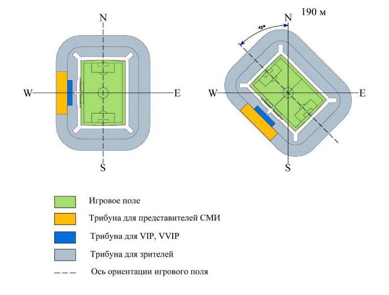
Приложение В Зоны размещения зрительских мест
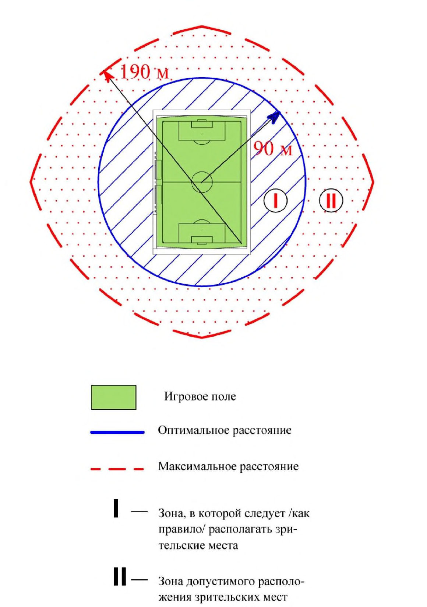
Рисунок В.1
ГПриложение Г. Обеспечение беспрепятственного обзора игрового поля (построение линии видимости)
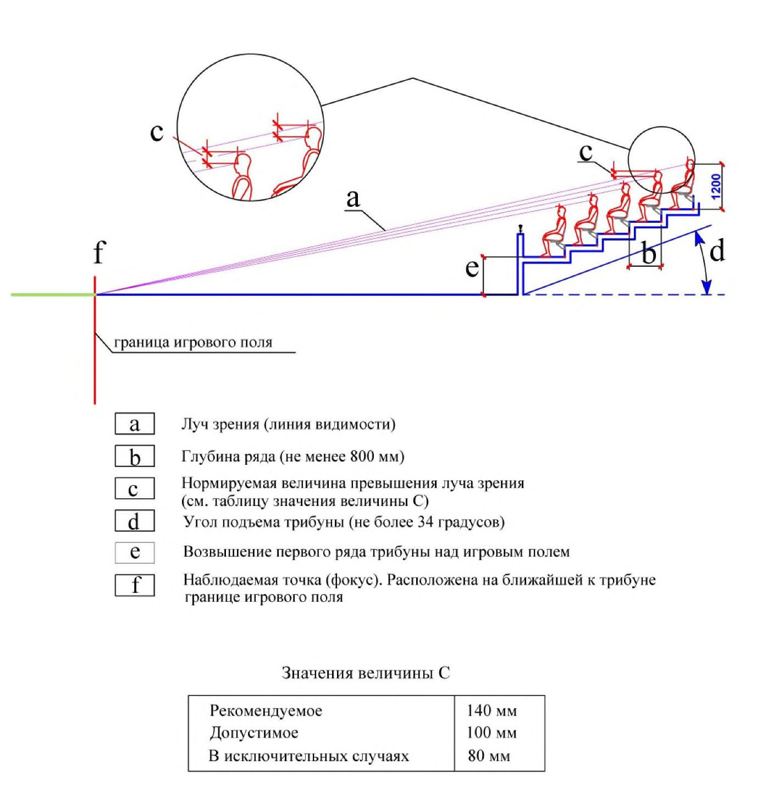
Рисунок Г.1
ДПриложение Д. Зонирование территории футбольного стадиона
Рисунок Д.1 Приложение Е
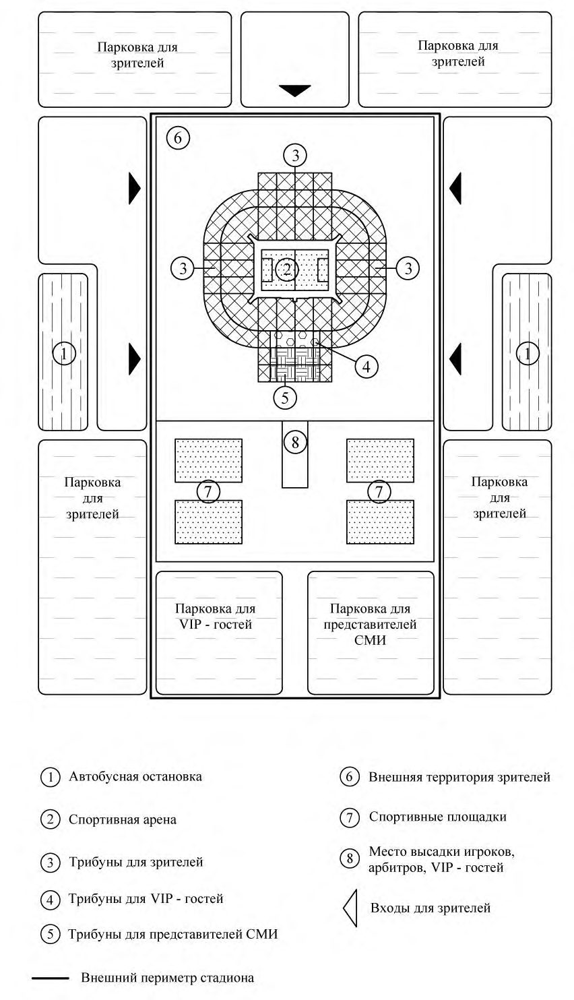
Параметры игровой зоны
Рисунок Е.1
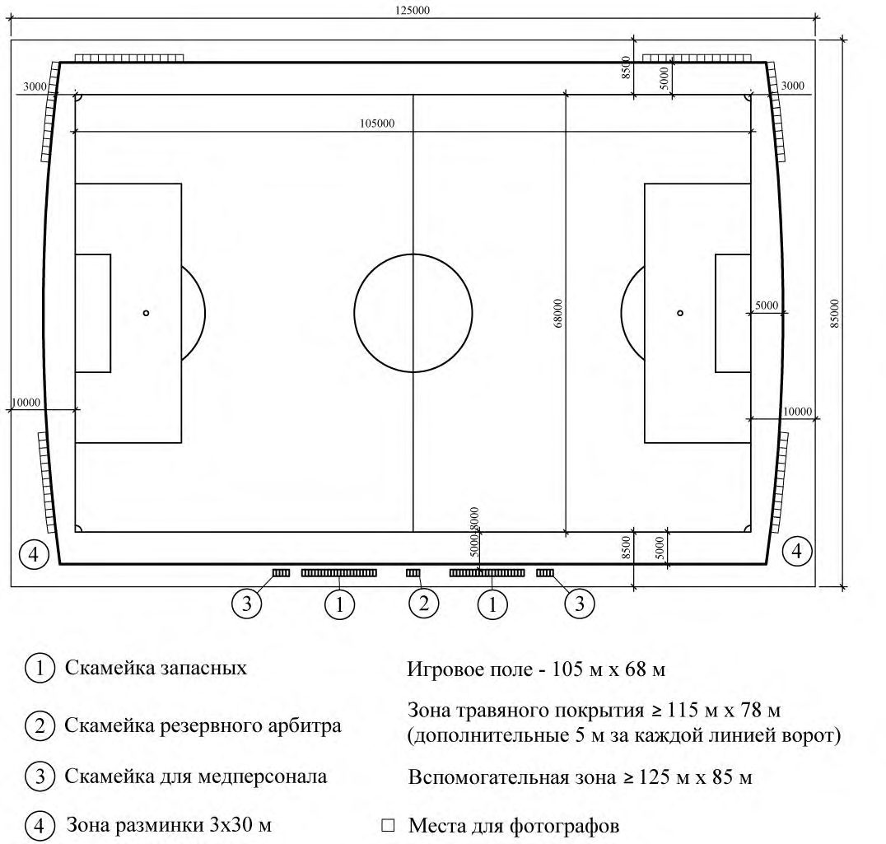
Приложение Ж
Размеры зрительских мест
Рисунок Ж.1
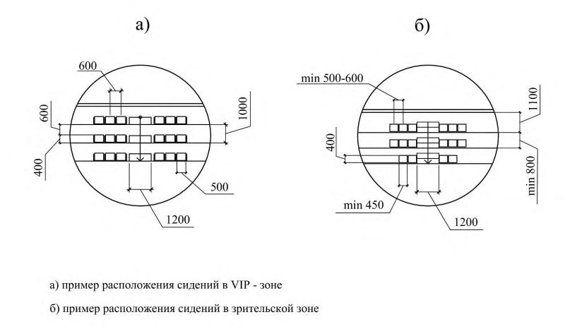
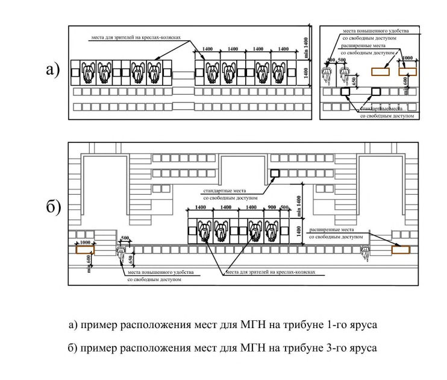
Приложение И
Размеры мест для маломобильных групп населения
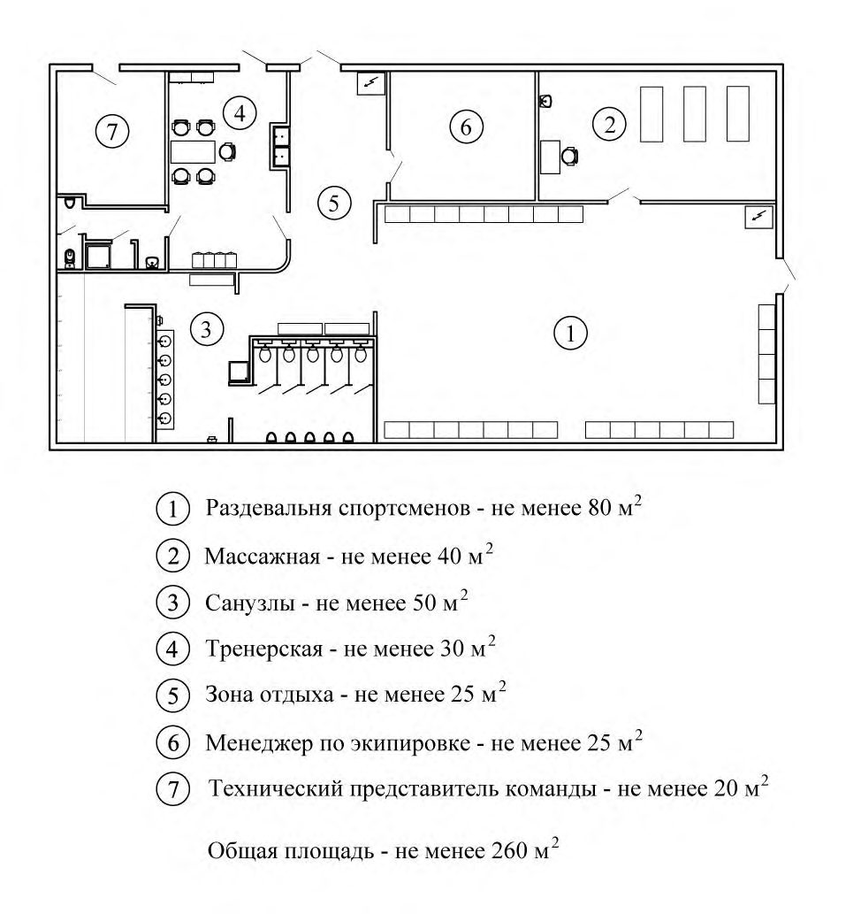
Рисунок И.1
КПриложение К. Примеры планировочных решений раздевалок команд, помещения арбитров, допинг-контроля и медицинского пункта для игроков
Рисунок К.1 - Раздевалка спортсменов
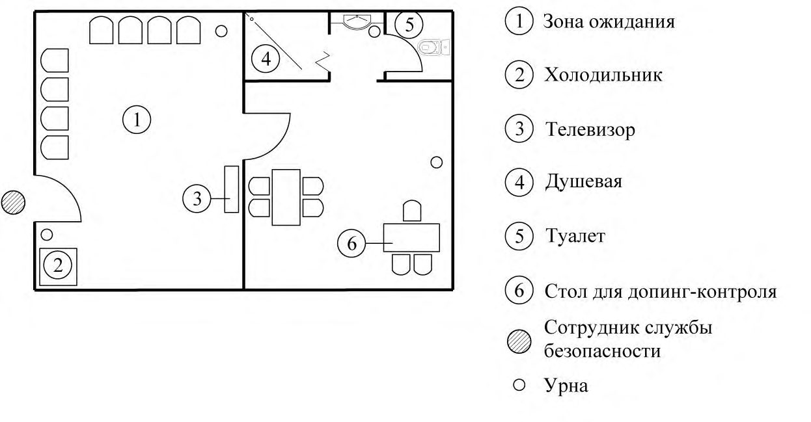
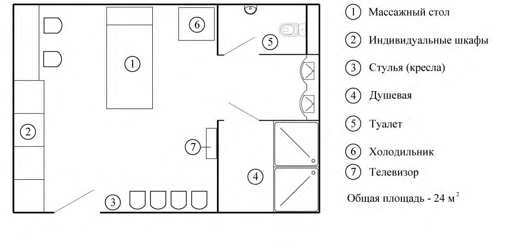
Рисунок К.2 - Помещение арбитров
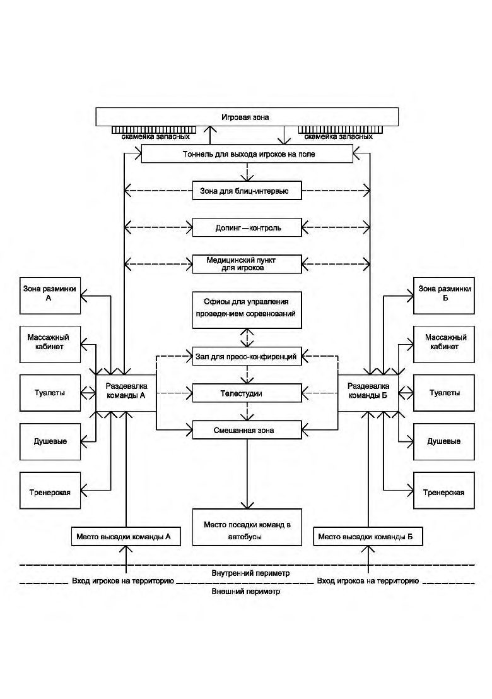
Рисунок К.3 - Помещение для допинг-контроля рисунок К.4 Медицинский пункт для игроков
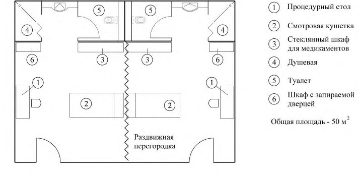
Схема движения спортсменов на футбольном стадионе
Рисунок Л.1
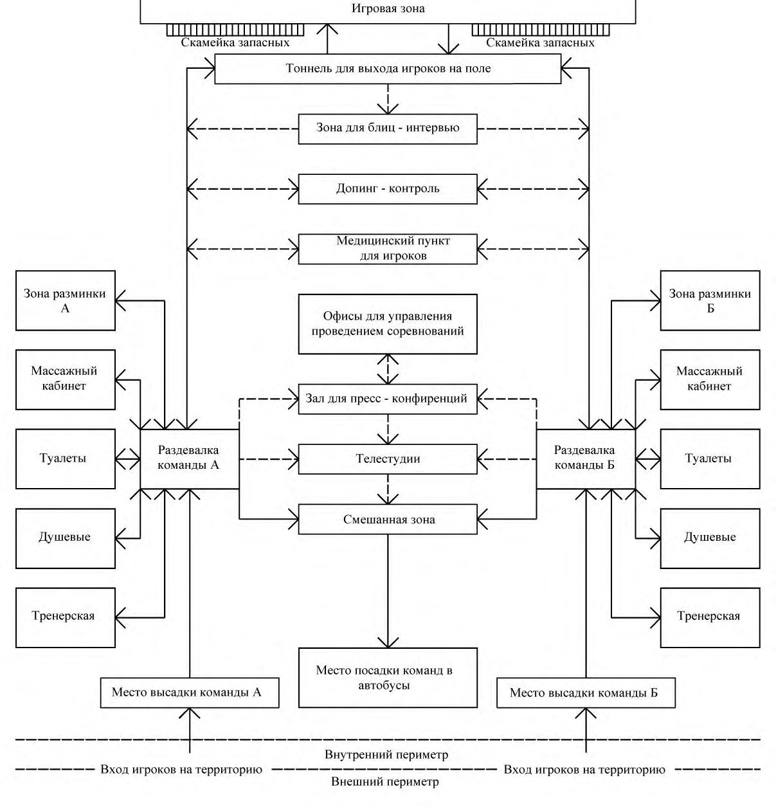
Пример планировочной организации и путей движения спортсменов
Приложение М в зоне команд
Рисунок М.1
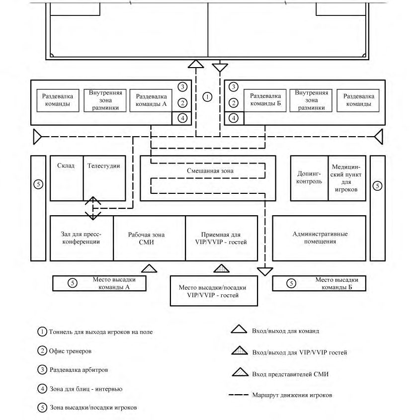
Приложение Н
Схема организации гостевого обслуживания на футбольном стадионе
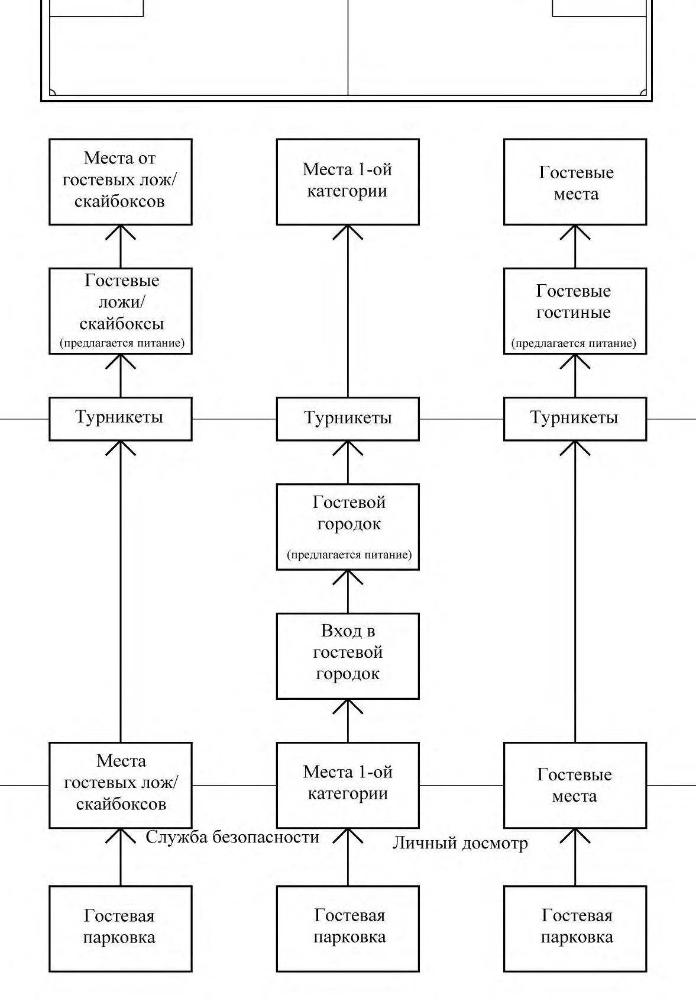
Рисунок Н.1 Приложение П
Перечень дополнительных временных сооружений футбольных стадионов для проведения чемпионатов мира
Таблица П.1
| Сооружение | Площадь, м² / финал | Площадь, м² / полуфинал | Площадь, м² / четверть- финал | Площадь, м² / группо- вые матчи | Расположение |
СП 285.1325800.2016
Приложение Р
| Центр волонтеров | 1 200 | 1 000 | 800 | 800 | За внешним периметром |
|---|---|---|---|---|---|
| Центр билетирования | 432 | 282 | 282 | 232 | То же |
| Центр аккредитации | 800 | 500 | 500 | 500 | » |
| Телевещательная зона | 6 000 | 6 000 | 4 000 | 4 000 | На территории футбольного стадиона |
| Помещения обслуживания телекоммуникацион ной и компьютерной техники | 800 | 800 | 800 | 800 | Рядом с телевещатель- ной зоной |
| Рекламная площадь | 8 000 | 8 000 | 4 000 | 4 000 | На границе внешнего периметра |
| Городок гостевого обслуживания (коммерческие партнеры) | 35 000 | 20 000 | 10 000 | 8 000 | То же |
| Городок гостевого обслуживания (платное обслуживание) | 50 000 | 30 000 | 20 000 | 10 000 | » |
| Пресс-центр | 6 000 | 5 000 | 4 000 | 3 000 | » |
| Логистика | 6 000 | 6 000 | 3 500 | 3 500 | » |
| 114 232 | 77 582 | 47 882 | 34 832 |
Правила подсчета общей площади, строительного объема, площади застройки и этажности спортивных арен
Открытые спортивные арены
Р.1 Общая площадь открытых спортивных арен определяется как сумма площадей всех этажей (надземных, включая технические, цокольный и подвальный),
СП 285.1325800.2016 измеренных в пределах внутренних поверхностей наружных стен или наружных граней крайних колонн (при отсутствии наружных стен). В общую площадь спортивной арены включается площадь открытых не отапливаемых планировочных элементов здания, таких как площадь эксплуатируемой кровли (стилобат, трибуны), открытых наружных галерей (фойе), открытых лоджий. В площадь этажа включаются площади балконов, лоджий, террас, а также лестничных площадок и ступеней с учетом их площади в уровне данного этажа. Площадь террас следует определять по их размерам, измеряемым по внутреннему контуру (между стеной здания и ограждением) без учета площади, занятой ограждением. Эксплуатируемая кровля при подсчете общей площади здания приравнивается к площади террас. Площадь этажа при наклонных наружных стенах измеряется на уровне пола. Площадь помещений, занимающих по высоте два этажа и более (двухсветных и многосветных), а также пространство между лестничными маршами шириной более 1,5 м и проемы в перекрытиях более 36 м , а также лифтовые и другие шахты следует включать в общую площадь в пределах только одного этажа. Отдельно следует указывать площадь отапливаемой и неотапливаемой части открытой спортивной арены. Р.2 Полезная площадь определяется как сумма площадей всех размещаемых в нем помещений, за исключением лестничных клеток, лифтовых шахт, внутренних открытых лестниц и пандусов и шахт для инженерных коммуникаций. Р.3 Расчетная площадь определяется как сумма площадей, входящих в него помещений, за исключением: - коридоров, тамбуров, переходов, лестничных клеток, внутренних открытых лестниц и пандусов; - лифтовых шахт; - помещений и пространств, предназначенных для размещения инженерного оборудования и инженерных сетей. Р.4 В общую и полезную площади открытой спортивной арены не включаются площади технического подполья и технического этажа при высоте от пола до низа выступающих конструкций (несущих и вспомогательных) менее 1,8 м, а также наружных балконов, крылец, наружных открытых лестниц и пандусов, включая пространство в подвальных этажах между строительными конструкциями, засыпанное землей. Подтрибунное пространство высотой менее 1,8 м в общей и полезной площади не учитывается. Р.5 Площадь помещений здания определяется по их размерам, измеряемым между отделанными поверхностями стен и перегородок на уровне пола (без учета плинтусов). Площадь помещений подтрибунного пространства на участке в пределах высоты до 1,5м, при уклоне трибун до 34° учитывается с понижающим коэффициентом 0,7 Р.6 Строительный объем здания определяется как сумма строительного объема выше отметки 0, 000 (надземная часть) и ниже этой отметки (подземная часть). Объем здания, при наличии разных по площади этажей, следует исчислять как сумму объемов его частей. Объем каждого этажа открытой спортивной арены определяется умножением площади горизонтального сечения в пределах внешних поверхностей наружных стен с включением ограждающих конструкций на высоту этажа, измеренную от уровня чистого пола этажа до уровня чистого пола следующего этажа.
Р.7 Площадь застройки открытой спортивной арены определяется как площадь горизонтального сечения по внешнему обводу здания по цоколю, включая выступающие части (входные площадки и ступени, веранды, террасы, приямки, входы в подвал). Площадь под зданием, расположенным на столбах, проезды под зданием, а также выступающие части здания, консольно выступающие за плоскость стены на высоте менее 4,5 м, включаются в площадь застройки.
В площадь застройки включается площадь футбольного поля и вспомогательная зона. В площадь застройки включается также подземная часть, выходящая за абрис проекции здания.
Р.8 При определении этажности здания в число этажей включаются все надземные этажи, в том числе технический этаж, цокольный этаж, если верх его перекрытия находится выше средней планировочной отметки земли не менее чем на 2 м.
Подполье под зданием, независимо от его высоты, а также междуэтажное пространство и технический этаж с высотой менее 1,8 м в число надземных этажей не включаются.
При различном числе этажей в разных частях здания, а также при размещении здания на участке с уклоном, когда за счет уклона увеличивается число этажей, этажность определяется отдельно для каждой части здания.
При размещении здания на участке с уклоном определение этажности следует применять для каждого помещения в отдельности. Для этого надо учитывать планировочную схему данного этажа и помещения, положение наружной стены помещения относительно отмостки и параметры естественной освещенности помещения.
При определении этажности здания для конструктивных или иных расчетов технические этажи учитываются в зависимости от особенностей этих расчетов, устанавливаемых соответствующими нормативными документами.
При расчете количества лифтов технический этаж, расположенный над верхним этажом, не учитывается. Технический этаж, расположенный в средней части здания, учитывается только в высоте подъема лифтов.
При определении этажности учитываются площадки и антресоли, площадь которых на любой отметке составляет более 40 % площади этажа здания.
Закрытые и трансформируемые спортивные арены
Общая, полезная и расчетная площади, строительный объем, площадь застройки и этажность закрытых и трансформируемых спортивных арен рассчитывается согласно СП 118.13330.
Библиография
- [1] Федеральный закон от 30 декабря 2009 г. № 384-ФЗ «Технический регламент о безопасности сооружений»
- [2] Федеральный закон от 23 ноября 2009 г. № 261-ФЗ «Об энергосбережении и о повышении энергетической эффективности и о внесении изменений в отдельные законодательные акты Российской Федерации»
- [3] Федеральный закон от 22 июля 2008 г. № 123-ФЗ «Технический регламент о требованиях пожарной безопасности»
- [4] Федеральный закон от 29 декабря 2004 г. № 190-ФЗ «Градостроительный кодекс Российской Федерации»
- [5] Стандарт РФС (СТО) «Футбольные стадионы», 2016
- [6] Постановление Правительства Российской Федерации от 18 апреля 2014 г. № 353 «Об утверждении Правил обеспечения безопасности при проведении официальных спортивных соревнований»
- [7] Постановление Правительства Российской Федерации от 6 марта 2015 г. № 202 «Об утверждении требований к антитеррористической защищенности объектов спорта и формы паспорта безопасности объектов спорта»
- [8] Приказ МВД России от 17 ноября 2015 № 1092 «Об утверждении Требований к отдельным объектам инфраструктуры мест проведения официальных спортивных соревнований и техническому оснащению стадионов для обеспечения общественного порядка и общественной безопасности»
- [9] Постановление Правительства Российской Федерации от 16 декабря 2013 г. № 1156 «Об утверждении Правил поведения зрителей при проведении официальных спортивных соревнований»
- [10] Федеральный закон от 4 декабря 2007 г. № 329-ФЗ «О физической культуре и спорте в Российской Федерации»
- [11] Постановление Правительства Российской Федерации от 16 февраля 2008 г. № 87 «О составе разделов проектной документации и требования к их содержанию»
- [12] Постановление Госстроя Российской Федерации от 1 июля 2002 г. № 76 «О порядке подтверждения пригодности новых материалов, изделий, конструкций и технологий для применения в строительстве»
- [13] СП 13-102-2003 Правила обследования несущих строительных конструкций зданий и сооружений
- [14] СП 41-101-95 Проектирование тепловых пунктов
- [15] ПУЭ Правила устройства электроустановок (7-е изд.)
- [16] РД 34.21.122-87 Правила устройства молниезащиты зданий и сооружений
- [17] Инструкция по устройству молниезащиты зданий, сооружений и промышленных коммуникаций